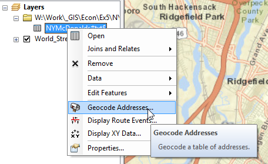
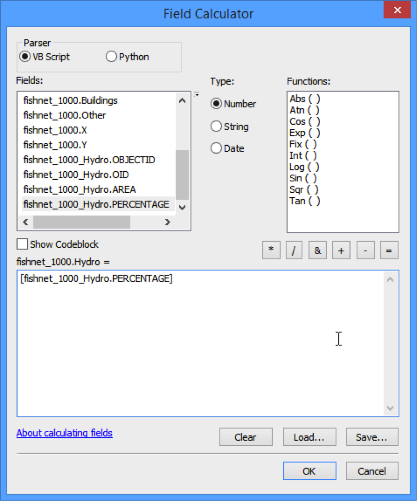
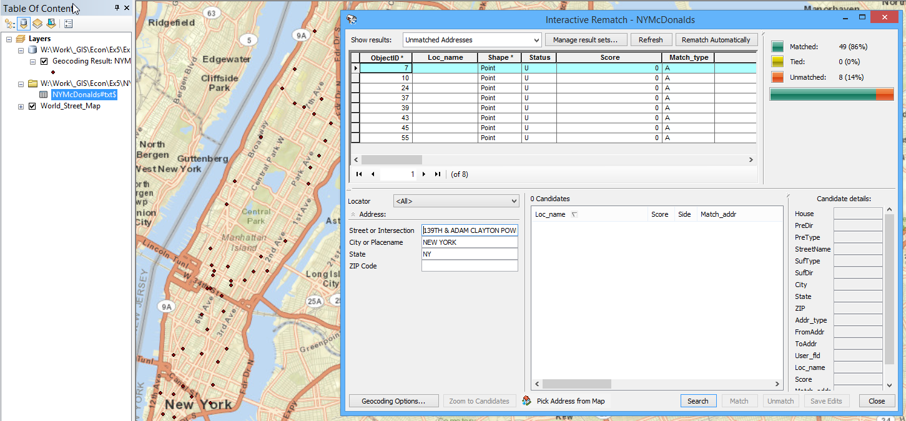
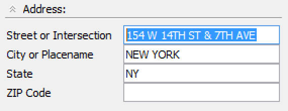
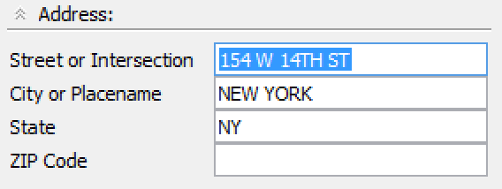

Упражнение 9 Анализ распределения типов подстилающей поверхности
9.1 Введение
Цель задания — научиться определять соотношение типов подстилающей поверхности по регулярной сетке для метеорологических моделей и моделей формирования поверхностного стока средствами ГИС-технологий.
| Параметр | Значение |
|---|---|
| Теоретическая подготовка | Оверлей пространственных объектов, соединение таблиц в реляционных базах данных, внешний и внутренний ключ соединения. |
| Практическая подготовка | Знание основных компонент интерфейса ArcGIS Desktop (каталог, таблица содержания, карта). Работы с базой пространственных данных. Настройка символики и подписей объектов. Владение базовыми ГИС-технологиями: пространственные и атрибутивные запросы, оверлей. |
| Исходные данные | Cлои картографической основы OpenStreetMap |
| Результат | Слой регулярной сетки, для каждой ячейки которого определено соотношение типов подстилающей поверхности. Картодиаграммы типов подстилающей поверхности. Проект карты с компоновкой. |
| Ключевые слова | Регулярная сетка, оверлей, соединение таблиц, картодиаграммы |
9.1.1 Контрольный лист
- Построить регулярную сетку с заданными параметрами.
- Определить долю каждого типа подстилающей поверхности в площади ячеек.
- Присоединить получившиеся столбцы к слою регулярной сетки.
- Экспортировать результаты в текстовый файл.
- Визуализировать результат способом картодиаграмм.
- Оформить карту в режиме компоновки.
9.1.2 Аннотация
В задачах климатического и метеорологического моделирования, а также моделирования поверхностного стока важную роль играет характер подстилающей поверхности, а именно соотношение водопроницаемых и водоупорных поверхностей, соотношение леса, воды, открытых грунтов, городских территорий и т.д. Подготовка этих данных осуществляетсясредствами ГИС на основе картографических данных и данных дистанционного зондирования.
В задании вам предлагается сформировать регулярную сетку и с помощью оверлея определить соотношение типов поверхностей по каждой ячейке. Результаты далее экспортируются в текстовый файл для дальнейшего использования при моделировании, а на основе полученных данных оформляется карта соотношения типов поверхностей методом картодиаграмм.
9.2 Оформление базовых слоев
Скопируйте каталог Ex09 в свою папку.
Подключитесь в окне каталога к вашей папке Ex09. Убедитесь, что в ней находится база геоданных LandCover.gdb:
Добавьте на карту следующие слои и раскрасьте их в соответствии с цветами:
Слой Цвет Hydro Голубой Green Зеленый Industrial Оранжевый Buildings Темно-серый Сохраните документ карты в свою папку под названием LandCover.mxd.
Снимок экрана №1. Типы подстилающей поверхности
9.3 Построение регулярной сетки
Создайте новую базу геоданных. Для этого в окне каталога щелкните правой кнопкой мыши по вашей папке <Фамилия>\Ex09 и выберите New > File Geodatabase.
Назовите базу геоданных Ex09.
Щелкните по Ex09.gdb правой кнопкой мыши и выберите пункт Make Default Geodatabase. Эта команда указывает системе, что все результаты автоматической обработки данных следует помещать в выбранную базу геоданных.
Откройте ArcToolbox с помощью иконки на панели инструментов.
Запустите инструмент геообработки Data Management Tools > Feature Class > Create Fishnet и заполните его параметры следующим образом.
Параметр Значение Output Feature Class <Ваша папка>/Ex09/Ex09.gdb/fishnet_1000 Template Extent Same as Layer Buildings Cell Size Width 1000 Cell Size Height 1000 Number of Rows 0 Number of Columns 0 Create Label Points Нет Geometry Type POLYGON Остальные параметры оставьте по умолчанию. Диалог инструмента примет следующий вид:

Нажмите ОК. После выполнения расчетная сетка будет добавлена на экран.
Разместите слой Fishnet поверх других слоев и смените его символ на черную линию толщиной 1 пункт.
Сохраните документ карты.
9.4 Подсчет доли водных объектов в площади ячеек
Запустите инструмент Analysis Tools > Statistics > Tabulate Intersection.
Заполните его параметры следующим образом:
Параметр Значение Input Zone Features fishnet_1000 Zone Fields OID Input Class Features Hydro Output Table <Ваша папка>/Ex09/Ex09.gdb/fishnet_1000_Hydro Остальные параметры оставьте по умолчанию. Диалог примет следующий вид:

Нажмите ОК, после выполнения таблица результатов будет добавлена в таблицу содержания.
Откройте таблицу и посмотрите значения в поле PERCENTAGE — они отражают долю объекта в площади ячейки.
9.5 Подсчет доли прочих типов поверхности в площади ячеек
Повторите операцию подсчета доли площади для оставшихся трех слоев, используя следующие параметры:
| Входной слой | Выходной слой |
|---|---|
| Green | Fishnet_1000_Green |
| Industrial | Fishnet_1000_Industrial |
| Buildings | Fishnet_1000_Buildings |
9.6 Добавление и инициализация атрибутивных полей
Откройте таблицу атрибутов слоя Fishnet.
Добавьте в нее поле, которое будет хранить значение доли водных объектов. Для этого выберите в главном меню таблицы команду Add Field… и заполните параметры появившегося диалога следующим образом:
Параметр Значение Name Hydro Type Float Остальные параметры оставьте по умолчанию.
Добавьте аналогичным образом поля Green, Industrial, Building, а также Other, которое будет использоваться для хранения доли прочих поверхностей.
Используя калькулятор поля, заполните каждое поле значением 0.
Сохраните документ карты.
9.7 Присоединение таблицы с долей водных объектов
Соединение таблиц (join) — операция, в результате которой к одной таблице добавляются столбцы из другой таблицы. При этом требуется, чтобы строки добавленных столбцов присоединились к нужным строкам основной таблицы. Порядок строк и их число в обеих таблицах, как правило, не одинаковы. Чтобы установить соответствие между строками исходной и присоединяемой таблицы, необходимо иметь в каждой таблице поле с общими для них значениями. Это поле именуется ключевым.
Откройте слой Fishnet на редактирование.
Присоедините таблицу Fishnet_1000_Hydro к слою Fishnet. Для этого откройте свойства слоя Fishnet, перейдите на вкладку Joins & Relates и нажмите Add в группе Joins.
Укажите его параметры следующим образом:
Параметр Значение OID Поле, содержащее уникальный идентификатор каждой записи Fishnet_1000_Hydro Присоединяемая таблица OID Поле в присоединяемой таблице, которое соответствует полю 1 в исходной Keep Only Matching Records Будут сохранены только те записи, для которых найдены совпадения поля OID При указании свойств соединения отметьте флажком опцию Keep Only Matching records. Диалог соединения таблиц примет следующий вид:

Используя калькулятор поля, перенесите значения из присоединенного столбца PERCENTAGE в столбец Hydro слоя Fishnet. Для этого щелкните правой кнопкой мыши по заголовку столбца Hydro и выберите в контекстном меню команду Field Calculator. В появившемся диалоге введите следующий текст команды (см рисунок ниже):
[fishnet_1000_Hydro.PERCENTAGE]Для подстановки названия поля в строку просто дважды щелкните на нем в списке. Обратите внимание на точечную нотацию. Текст до точки — это название таблицы. Текст после точки — название поля.
Диалог примет следующий вид:

Нажмите ОК. Значения будут скопированы их одного столбца в другой.
Удалите соединение таблиц.
9.8 Присоединение таблиц прочих типов поверхностей
Повторите операцию соединения для таблиц Fishnet_1000_Green, Fishnet_1000_Industrial и Fishnet_1000_Buildings. После присоединения вычислите на их основе соответствующие поля в таблице Fishnet. Не забудьте перед каждым новым соединением удалять предыдущее.
9.9 Вычисление доли прочих поверхностей
С помощью калькулятора поля вычислите долю прочих поверхностей в поле Other, используя следующее выражение:
100 - [Hydro] - [Green] - [Industrial] - [Buildings]
После вычисления завершите сеанс редактирования слоя.
9.10 Вычисление координат центров ячеек
Для использования данных при моделировании важно знать координаты центров ячеек.
Добавьте столбцы X и Y типа Long Integer в таблицу слоя Fishnet.
Вычислите их с помощью калькулятора геометрии. Для этого щелкните на столбце X правой кнопкой мыши и в контекстном меню выберите команду Calculate Geometry.
В появившемся диалоге выберите режим X Coordinate of Centroid и нажмите ОК:

Повторите операцию для столбца Y.
Сохраните документ карты.
После выполнения всех операций атрибутивная таблица слоя Fishnet должна принять приблизительно следующий вид:

Снимок экрана №2. Атрибутивная таблица слоя расчетной сетки
9.11 Экспорт таблицы в файл
Экспортируйте результирующую таблицу в текстовый файл для ее дальнейшего использования. Для этого:
В главном меню таблицы выберите команду Export….
В поле Output Table нажмите кнопку указания места сохранения файла и перейдите в ваш каталог Ex09.
Смените тип файла на текстовый и назовите его Results.txt:

Откройте получившийся файл через Проводник, чтобы просмотреть его содержимое.
Снимок экрана №3. Файл данных расчетной сетки
9.12 Построение картодиаграмм
Для визуализации соотношения типов поверхностей по ячейкам удобно использовать картодиаграммы.
Установите масштаб изображения 1:100 000.
Измените способ изображения слоя Fishnet на Pie Charts (картодиаграммы).
Добавьте столбцы Hydro, Green, Industrial, Buildings и Other в поля картодиаграммы и раскрасьте их в соответствии с рисунком:

Нажмите кнопку Size и установите диаметр кружка равным 18 пунктам.
Символ Background сделайте без заливки и с черной обводкой. Нажмите ОК.
Установите прозрачность для всех слоев 70%, чтобы подложка не мешала восприятию картодиаграмм. Документ карты примет следующий вид:

Снимок экрана №4. Картодиаграммы
9.13 Оформление компоновки карты
Оформите карту на один из фрагментов территории, на котором встречаются ячейки с разным типом поверхности. Для этого:
Переключитесь в режим компоновки.
Переименуйте слой Fishnet_1000 в Типы подстилающей поверхности.
Установите масштаб карты равным 1:100 000 и переместите изображение на выбранный вами участок территории.
Добавьте легенду для слоя Типы подстилающей поверхности
Добавьте заголовок карты.
Добавьте масштаб.
Экспортируйте карту в файл LandCover.png в свою директорию Ex09.
Вставьте карту в отчетный файл.
Сохраните документ карты.
9.14 Контрольные вопросы
Ответьте на вопросы в отчетном файле. После окончания положите ваш отчет в сетевую папку для проверки вашим преподавателем.